换图三步走
- 打开文件夹
duntoulan-site\images（所有图片都在这里，共 60 张） - 在下面的对照表里找到要换的图，记下文件名，例如
hero-banner.jpg - 把你的照片改成一模一样的文件名（注意
.jpg后缀要一致），拖进文件夹，选择“替换目标中的文件” → 网页刷新即生效
三点提醒：① 尺寸不用严格照搬，但比例要接近，否则画面会被裁切；② 手机直出照片通常是竖图，建议横图栏目用横拍或先裁剪；③ 保存为 JPG，质量 80% 左右即可，单张别超过 1MB，网页更快。
首页 index.html
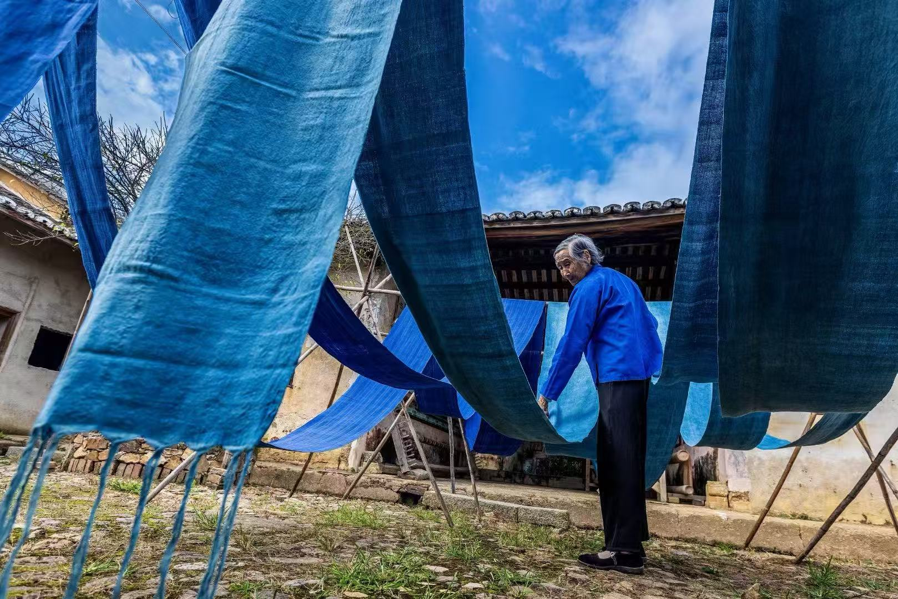
hero-banner.jpg
首屏大图（最重要）
建议用最有氛围感的横幅：晾晒的蓝布、染缸、工坊全景。左侧要放白色文字，最好选左半部分比较简洁的照片。
建议 1600×700 以上 · 横图
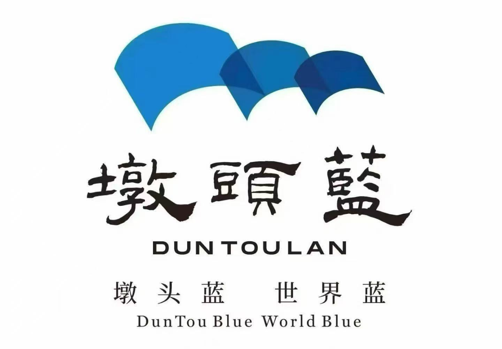
culture-intro.jpg
文化简介配图
能体现技艺的作品或场景：一匹成品蓝布、老人织布的手部特写。
建议约 5:4 · 900×720
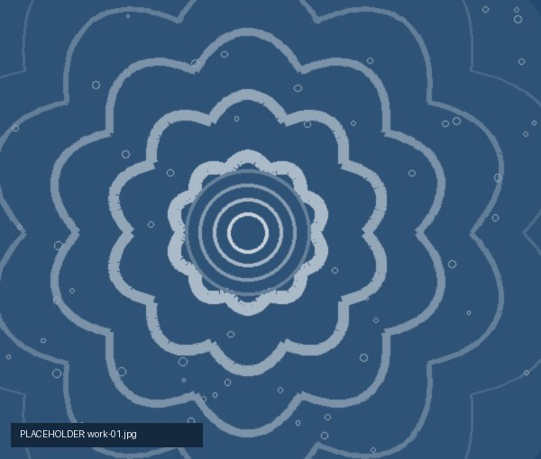
work-01.jpg
作品卡 1 · 扎染围巾
围巾平铺或佩戴效果图。
建议 4:3.4 · 600×510
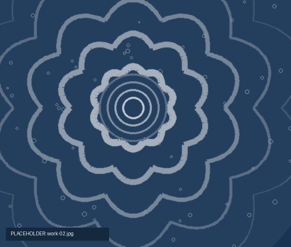
work-02.jpg
作品卡 2 · 蓝染布艺
布艺小物、杯垫、桌旗等。
建议 4:3.4 · 600×510
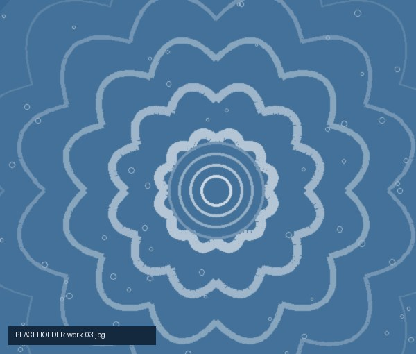
work-03.jpg
作品卡 3 · 扎染服饰
蓝染服装上身照。
建议 4:3.4 · 600×510

work-04.jpg
作品卡 4 · 蓝染抱枕
家居场景中的抱枕。
建议 4:3.4 · 600×510

work-05.jpg
作品卡 5 · 蓝白桌旗
茶席、长桌铺陈效果。
建议 4:3.4 · 600×510
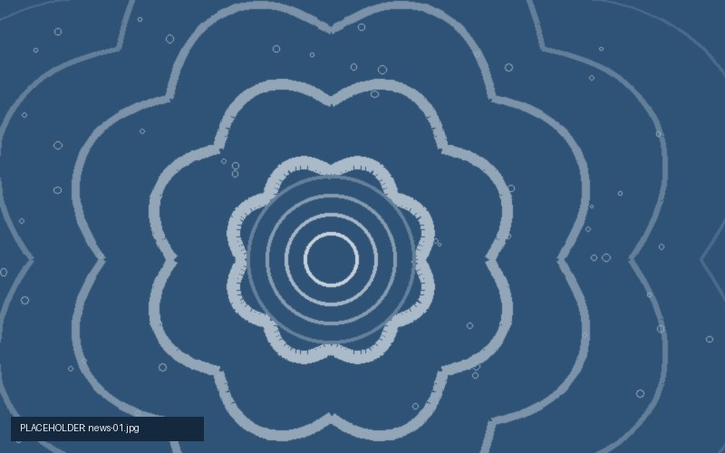
news-01.jpg
新闻卡 1 配图
“进校园”活动照：学生扎布、染缸前的场景。
建议 16:10 · 800×500

news-02.jpg
新闻卡 2 配图
展览现场：悬挂的蓝布、展墙。
建议 16:10 · 800×500

news-03.jpg
新闻卡 3 配图
体验课现场：工作台、染缸、成品。
建议 16:10 · 800×500
墩头蓝文化 culture.html

origin.jpg
技艺源流配图
村景、老屋、老染缸，讲“从墩头村到蓝染”。
建议约 5:4 · 900×720

genre-01.jpg
地域流派 1 · 和平墩头村
墩头村本地场景。
建议 4:3 · 600×450
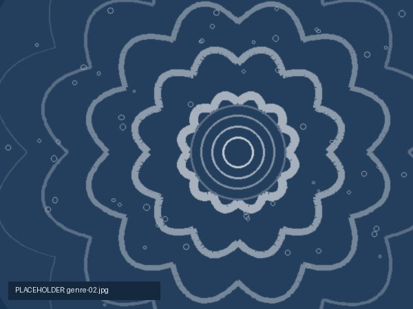
genre-02.jpg
地域流派 2 · 东江流域
江边、水系相关的蓝染场景。
建议 4:3 · 600×450
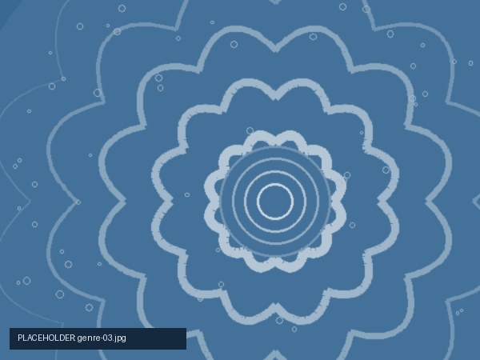
genre-03.jpg
地域流派 3 · 客家聚居地
围屋、墟市、客家生活场景。
建议 4:3 · 600×450

pattern-big.jpg
纹样寓意 · 团花纹大图
一张团花纹（圆形放射纹样）的清晰特写，正方形最好。
正方形 · 700×700
工艺流程 process.html
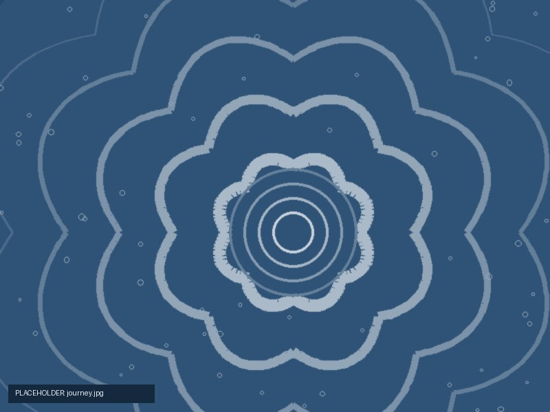
journey.jpg
蓝色旅程配图
白布到蓝布的过程感画面：晾绳、染缸、手部动作。
建议 4:3 · 800×600
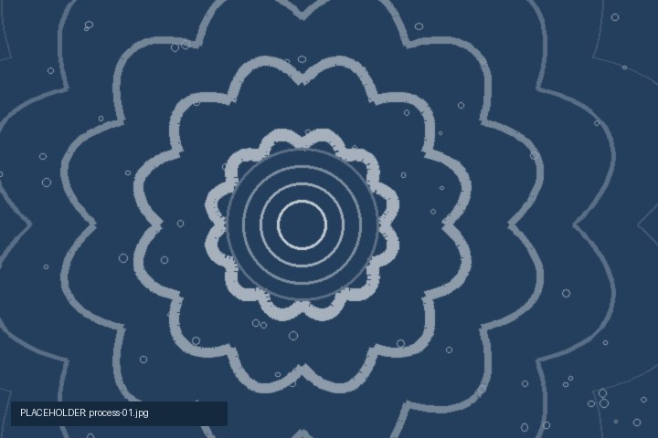
process-01.jpg
步骤 01 · 设计纹样
画稿、设计纹样的手部特写。
建议 3:2 · 720×480
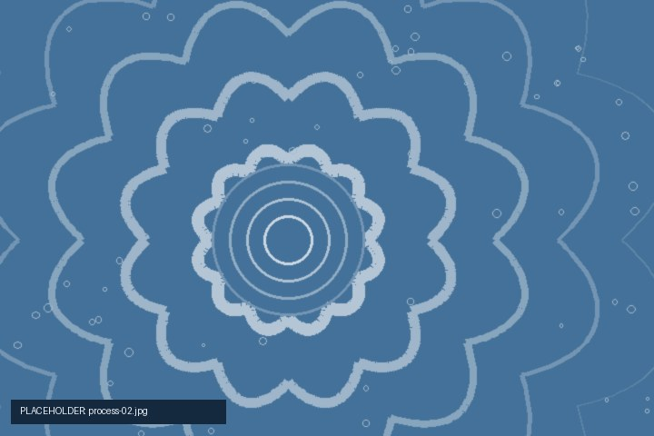
process-02.jpg
步骤 02 · 折叠捆扎
缝扎、捆线的过程。
建议 3:2 · 720×480
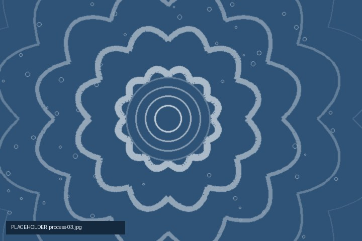
process-03.jpg
步骤 03 · 蓝靛染色
布入染缸、搅拌的瞬间。
建议 3:2 · 720×480

process-04.jpg
步骤 04 · 晾晒氧化
晾绳上的蓝布、阳光下晾晒。
建议 3:2 · 720×480
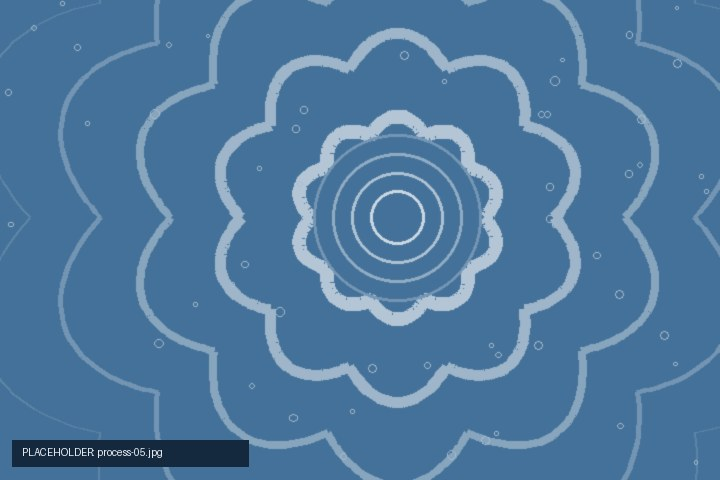
process-05.jpg
步骤 05 · 拆线成纹
拆线瞬间、纹样揭晓的特写。
建议 3:2 · 720×480
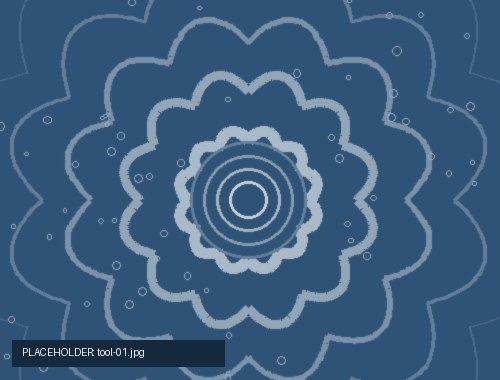
tool-01.jpg
工具 1 · 白棉坯布
成卷/叠好的白坯布。
建议 500×380

tool-02.jpg
工具 2 · 植物蓝靛
蓝靛、染液、植物的特写。
建议 500×380

tool-03.jpg
工具 3 · 棉线绳具
线团、针线、捆扎工具的静物。
建议 500×380

tool-04.jpg
工具 4 · 染缸木桶
染缸、木桶、工坊一角。
建议 500×380
作品展示 works.html

featured-works.jpg
精选单品大图
本期主推作品（如团花桌旗）的场景大图，最能撑场面的一张。
建议 4:3 · 900×680

series-01.jpg
作品系列 1 · 扎染围巾
围巾作品图。
建议 4:3 · 600×450
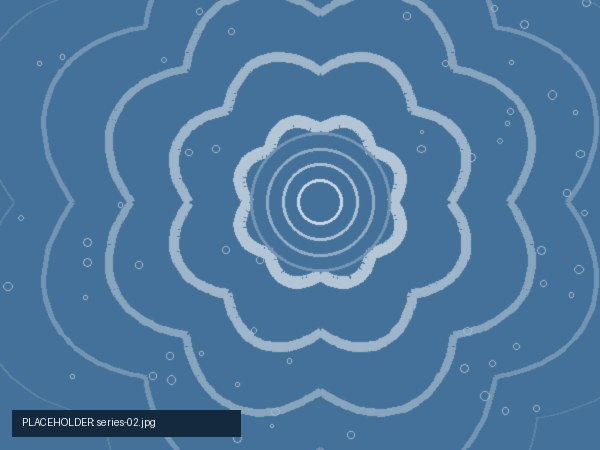
series-02.jpg
作品系列 2 · 蓝染布艺
布艺小物作品图。
建议 4:3 · 600×450
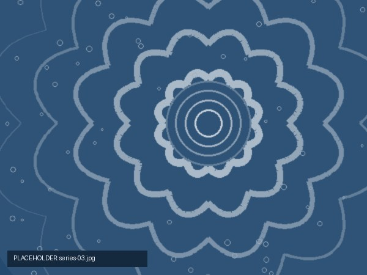
series-03.jpg
作品系列 3 · 扎染长衫
服装类作品图。
建议 4:3 · 600×450

series-04.jpg
作品系列 4 · 蓝白抱枕
抱枕作品图。
建议 4:3 · 600×450
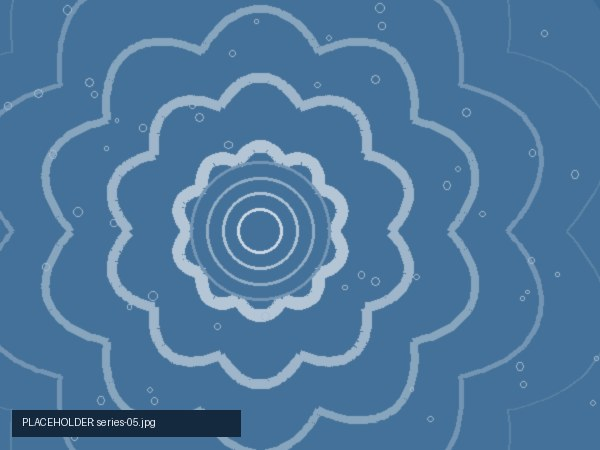
series-05.jpg
作品系列 5 · 茶席桌旗
桌旗作品图。
建议 4:3 · 600×450
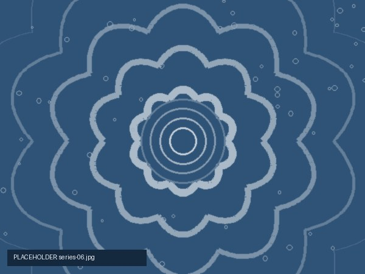
series-06.jpg
作品系列 6 · 文创帆布包
帆布包作品图。
建议 4:3 · 600×450
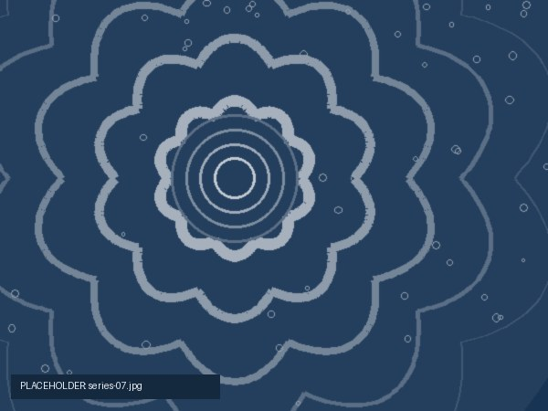
series-07.jpg
作品系列 7 · 蓝染挂画
挂画/装饰布作品图。
建议 4:3 · 600×450
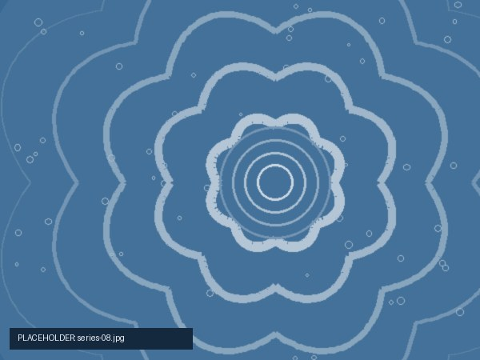
series-08.jpg
作品系列 8 · 扎染方巾
方巾作品图。
建议 4:3 · 600×450
文创产品 shop.html

shop-intro.jpg
系列宣传大图
“蓝白山水系列”整体陈列图。
建议 4:3 · 800×620

product-01.jpg
商品 1 · 扎染桌布
商品白底或场景图。
正方形 · 600×600
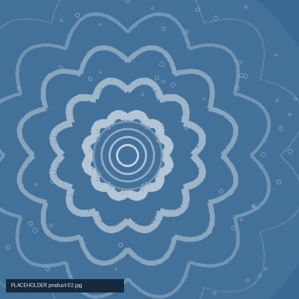
product-02.jpg
商品 2 · 蓝染桌旗
商品白底或场景图。
正方形 · 600×600
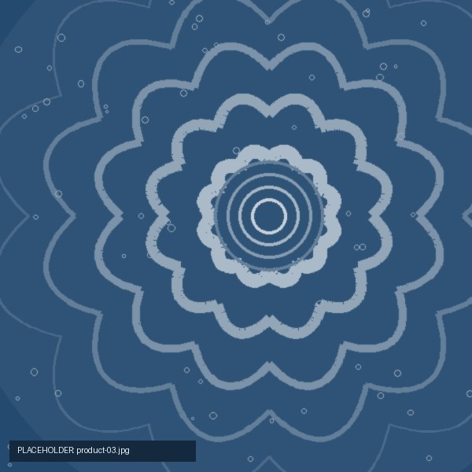
product-03.jpg
商品 3 · 文创托特包
商品白底或场景图。
正方形 · 600×600

product-04.jpg
商品 4 · 扎染抱枕
商品白底或场景图。
正方形 · 600×600
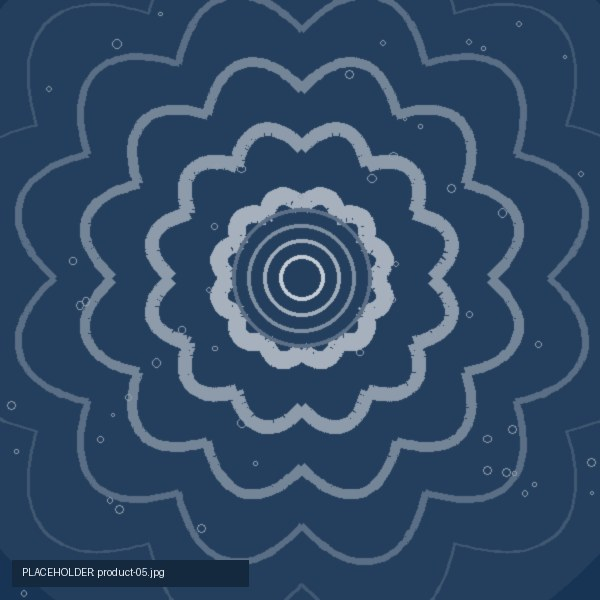
product-05.jpg
商品 5 · 蓝染挂画
商品白底或场景图。
正方形 · 600×600
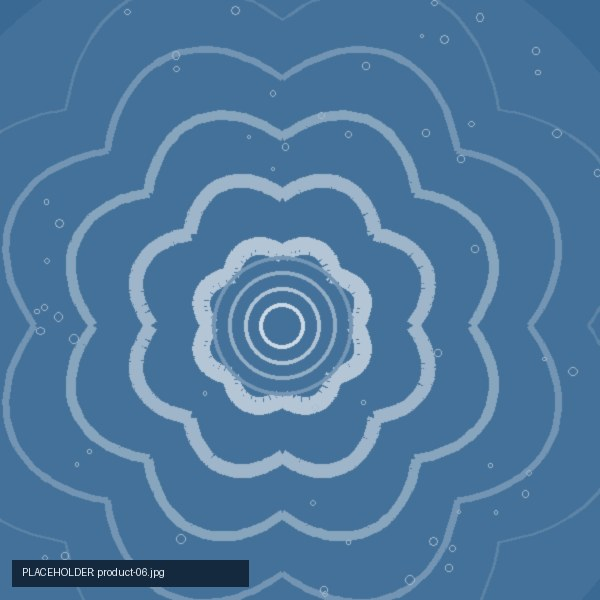
product-06.jpg
商品 6 · 手作礼盒
礼盒整体展示图。
正方形 · 600×600
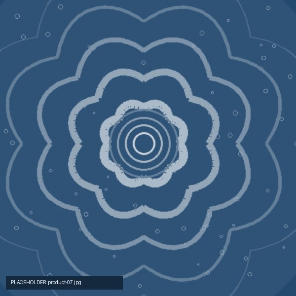
product-07.jpg
商品 7 · 扎染杯垫
商品白底或场景图。
正方形 · 600×600

product-08.jpg
商品 8 · 扎染束口袋
商品白底或场景图。
正方形 · 600×600
体验课程 courses.html

course-hero.jpg
手作现场配图
课堂现场：学员围坐、老师指导、染缸在前。
建议约 5:4 · 900×720
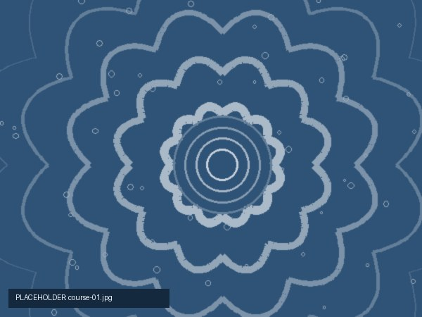
course-01.jpg
课程类型 1 · 亲子体验
家长与孩子一起扎染。
建议 4:3 · 600×450

course-02.jpg
课程类型 2 · 研学实践
学生团体上课场景。
建议 4:3 · 600×450

course-03.jpg
课程类型 3 · 成人手作
成人课程、作品特写。
建议 4:3 · 600×450

scene-01.jpg
场景图 1 · 研学
校园/研学活动照。
建议 500×380

scene-02.jpg
场景图 2 · 团建
企业团建活动照。
建议 500×380
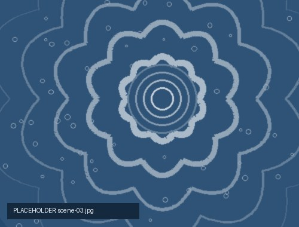
scene-03.jpg
场景图 3 · 市集
文创市集摊位照。
建议 500×380

scene-04.jpg
场景图 4 · 展览
展览、活动现场照。
建议 500×380
新闻资讯 news.html

headline.jpg
头条大图
最重要的那条新闻配图，建议用展览/活动大场景。
建议 16:11 · 860×590

article-01.jpg
资讯卡 1 配图
对应第一条资讯的照片。
建议 16:10 · 640×400
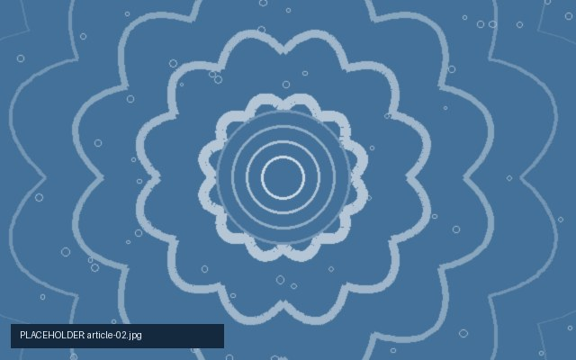
article-02.jpg
资讯卡 2 配图
对应第二条资讯的照片。
建议 16:10 · 640×400

article-03.jpg
资讯卡 3 配图
对应第三条资讯的照片。
建议 16:10 · 640×400

article-04.jpg
资讯卡 4 配图
对应第四条资讯的照片。
建议 16:10 · 640×400
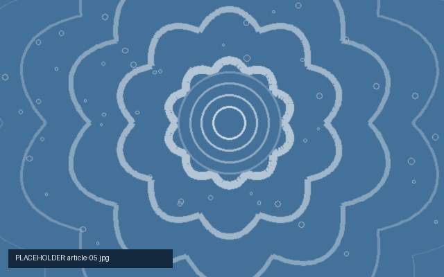
article-05.jpg
资讯卡 5 配图
对应第五条资讯的照片。
建议 16:10 · 640×400

article-06.jpg
资讯卡 6 配图
对应第六条资讯的照片。
建议 16:10 · 640×400
联系我们 contact.html
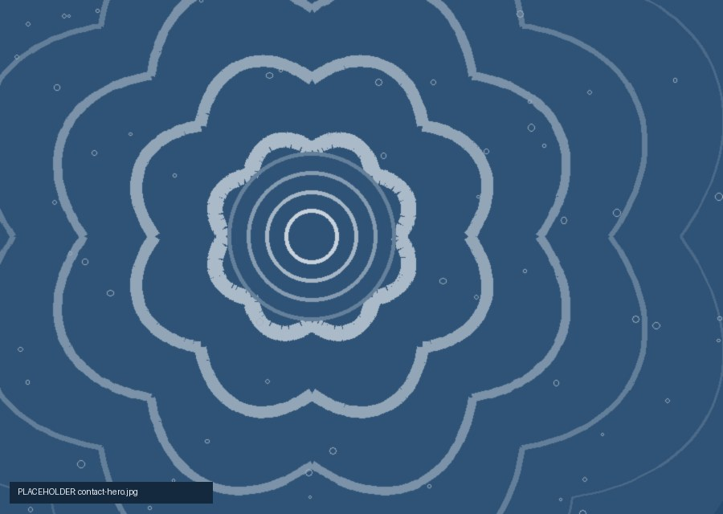
contact-hero.jpg
开场配图
工坊外观、招牌、有人在染布的场景。
建议约 5:4 · 900×640

visit.jpg
到访指引配图
村口、工坊门面、导视牌等“怎么找到我们”的照片。
建议 800×620
还有两个特殊文件
images/logo.png —— 导航栏左上角的方形徽标（已用你们提供的 logo 裁好，换的话建议方形、透明底）
images/logo-full.png —— 原始完整 logo（含“河源墩头蓝”字样），留档备用，一般不用动